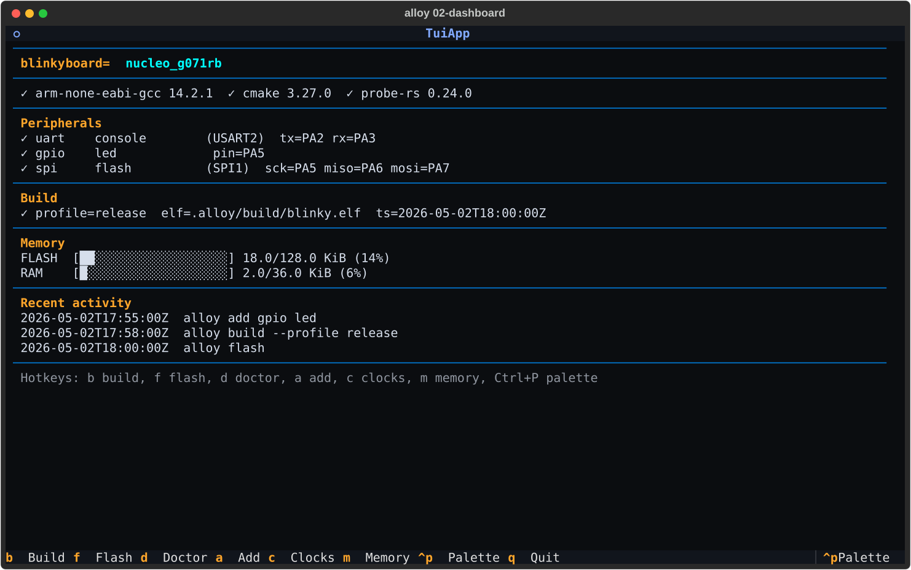
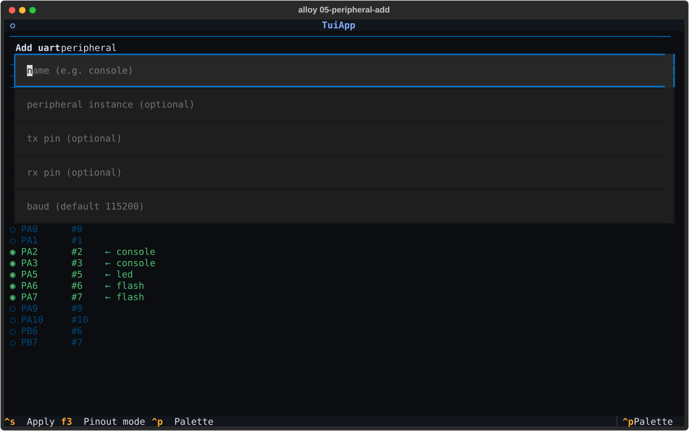
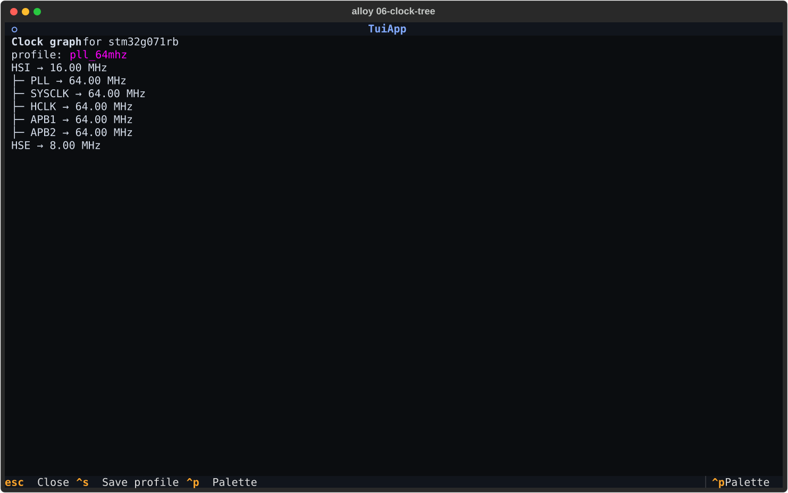

alloy-cli#
Embedded firmware development without the IDE. Pin picker, clock-tree visualiser, build / flash / debug, AI-assisted scaffolding — all in your terminal, all from a single tool.
Why alloy-cli?#
alloy-cli is the developer-facing surface of the Alloy embedded
platform. It replaces the dance of CubeMX (GUI) → IDE (closed
project format) → vendor flasher (per-chip) → CMake (write-it-
yourself) with one tool that:
- Scaffolds a working project from a board or chip name.
- Configures peripherals (UART / SPI / I²C / TIM / DMA / clocks) through an interactive terminal pin picker that rivals CubeMX — with the difference that every choice is validated against a typed, schema-locked device IR at config time.
- Builds, flashes, debugs with toolchain auto-detection (probe-rs, OpenOCD, J-Link, ST-Link, picoprobe) — without a CMake line in sight.
- Talks to LLM agents (Claude Code, opencode, Cursor, Continue)
natively via MCP so
> "blink the LED"becomes a working, schema-valid project change.
What you get#
-
Scaffold in seconds
alloy new firmware --board nucleo_g071rb— answer Y when prompted and the toolchain installs into a per-user content- addressed store. No PATH munging, no vendor IDE, no CMake boilerplate. -
Validated configuration
Every pin, every clock, every DMA stream is checked against a typed device IR at config time. Bad combinations fail with a structured diagnostic + suggested alternatives, not at link time.
-
AI-native workflow
The MCP surface exposes typed tools to Claude / opencode / Cursor. Two-phase mutations (preview → apply) keep agent suggestions safe; typed errors guide them to the right answer.
See it in action#
The TUI dashboard surfaces project state, build status, and memory usage at a glance:

Add a peripheral with the IR-validated pin picker:

Inspect the clock tree without leaving the terminal:

Where to go next#
-
New here?
The 5-minute Quickstart takes you from
pip installto a flashed Nucleo blinking its on-board LED. -
Cloned an existing project?
Run
alloy doctor --fixto install the project's pinned toolchain into your local store. -
Hit an error?
Every error in alloy-cli has a stable
error_type. The cookbook lists every one with recovery steps. -
Reference material?
Every CLI verb, every alloy.toml field, every MCP tool — the Reference section has it all.